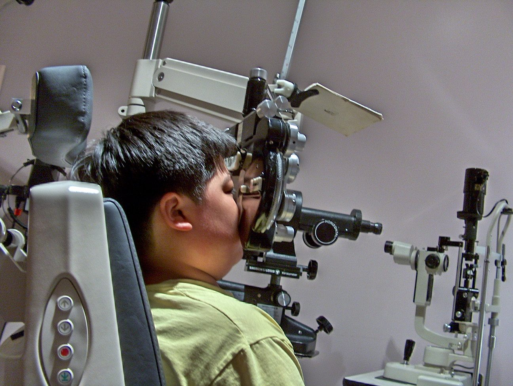

Install LASIK in one line.
It runs from npx with Node 20.19 or newer, registers itself with your coding agents, and never executes the code it reads.
Check your machine
Doctor checks Node, npx, which agents already know about LASIK, and whether REA is installed.
npx lasik-agents doctorConnect your agents
Setup registers the LASIK MCP server with Claude Code, Claude Desktop, Cursor, Codex, Gemini CLI, Windsurf, Antigravity, VS Code, Copilot CLI and opencode. Pick one with
--client, preview with--dry-run, undo with--remove.npx lasik-agents setupnpx lasik-agents setup --client claude-code --dry-runSee how blind your agent is
Scan detects BLA hardening, reports how many AI-evasion techniques it found, and scores how badly an agent would be misled. In CI,
--fail-onstops a build that ships code trying to hide from AI review.npx lasik-agents scan ./appnpx lasik-agents scan ./vendor --fail-on suspectedHeal a copy and read it
Heal writes a cleaned copy beside the original, or where
-osays, and leaves your files alone. Point REA or your agent at the copy.npx lasik-agents heal ./app -o ./app.lasiknpx lasik-agents heal ./app --md > report.mdFilter planted instructions
Firewall redacts text written to steer a model, such as fake chat turns and refusal bait, from a file or from standard input.
cat strings.txt | npx lasik-agents firewall -Or wire the MCP server yourself
Any client that speaks MCP over stdio can start LASIK with this entry.
{ "mcpServers": { "lasik": { "command": "npx", "args": ["-y", "lasik-agents", "mcp"] } } }